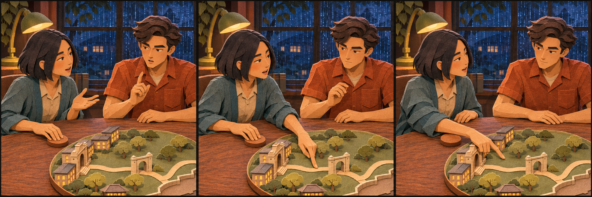
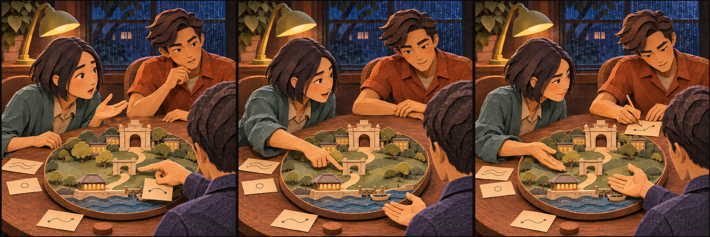

Turn the table

Theo starts to answer, then leaves the speaking space with Nia. The unfinished harbour remains a separate ending beat.

Theo starts to answer, then leaves the speaking space with Nia. The unfinished harbour remains a separate ending beat.

Nia can correct the meaning. The lead receives it without defensiveness; Theo contributes. One slip remains uncertain.
Showing both complete studies.